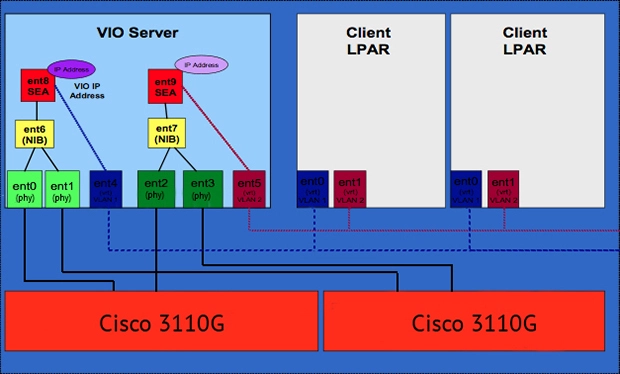
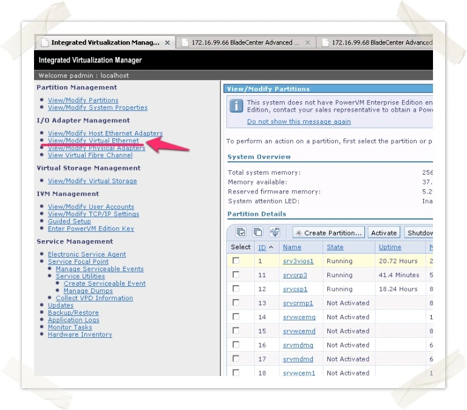
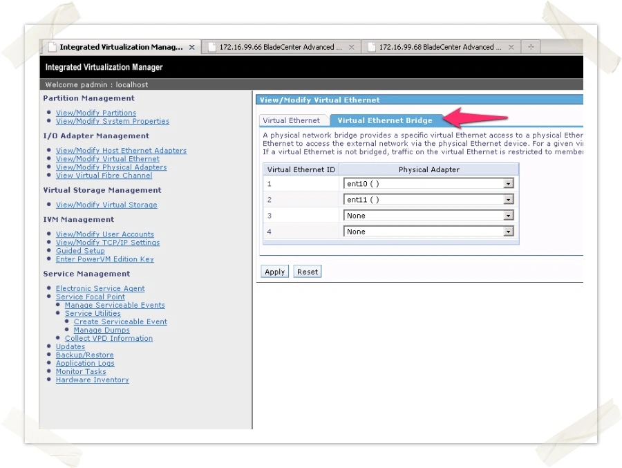

SEA for IBM Bladecenter
Недавно я занимался инсталляцией сервера для одного из заказчиков. Конфигурация оборудования была такой - IBM BC-H, в котором установленно одно сдвоенное p-series лезвие (PS701/702). Сетевые интерфейсы, приходящие с разных цисок были объеденены между собой в Etherchannel на VIOS. Далее на этих Etherchannel был настроен SEA, который и “прокидывался” в LPAR’ы. Схема организации сетевого доступа изображена ниже.
{kind=link}
До тех пор, пока я не начал создавать SEA все шло великолепно. Когда же я пытался создать SEA, то получал вот такую ошибку:
padmin@vios1> mkvdev -sea ent2 -vadapter ent3 -default ent3 -defaultid 1
Method error (/usr/lib/methods/cfgsea):
Failed to configure SEA with return code 1 and SEA-specific error code 10:
Detailed info: Setting real adapter ent2 in promiscuous mode failed with error 1
Вся хитрость заключается в том, что нам требуется вручную переключить адптеры в promiscuous mode. Для начала мы должны узнать ID наших адаптеров (в моем случае их два):
padmin@vios1>lshwres -r hea --rsubtype logical --level sys
adapter_id=23000001,lpar_id=1,lpar_name=srv3vios1,drc_index=23C00101,drc_name=HEA 2,capabilities=0,ieq=0,nieq=0,qp=0,cq=0,mr=0
adapter_id=23000003,lpar_id=1,lpar_name=srv3vios1,drc_index=23C00103,drc_name=HEA 4,capabilities=0,ieq=0,nieq=0,qp=0,cq=0,mr=0
Далее переключаем порты наших адаптеров в promiscuous mode:
padmin@vios1>chhwres -r hea -o s -l 23000001 -g 1 -a promisc_lpar_id=1 --physport 0
padmin@vios1>chhwres -r hea -o s -l 23000001 -g 1 -a promisc_lpar_id=1 --physport 1
padmin@vios1>chhwres -r hea -o s -l 23000003 -g 1 -a promisc_lpar_id=1 --physport 0
padmin@vios1>chhwres -r hea -o s -l 23000003 -g 1 -a promisc_lpar_id=1 --physport 1
Теперь можно назначить IP-адрес на etherchannel, для того что бы можно было зайти в IVM.
Далее создаем SEA либо через CLI (mkvdev -sea ent6 -vadapter ent2 -default ent2 -defaultid 255), либо используя WEB интерфейс IVM (в этом случае будет создан интерфейс SEA и на него назначен тот ip-адрес, который был на etherchannel интерфейсе)
 {kind=link}
{kind=link}
Теперь, при создании LPAR’а мы линкуем ent0 в первый виртуальный свитч, а ent1 - во второй.